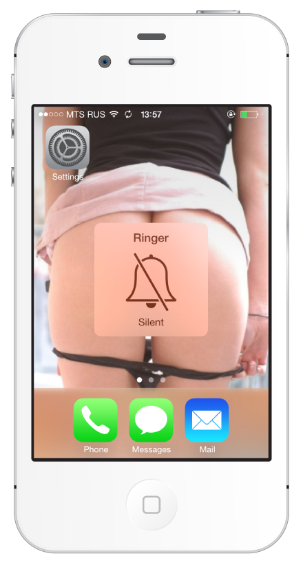
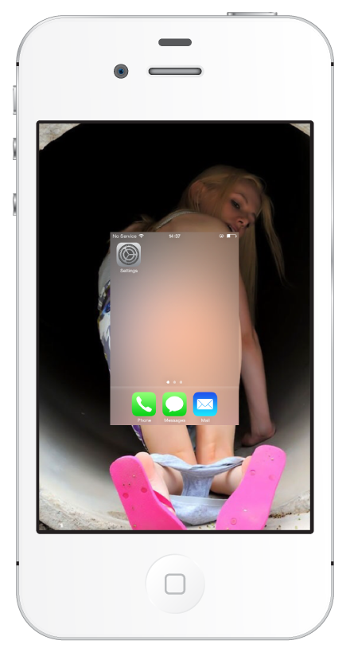

Censorhip in iOS 7
I think all seen the new design of iOS 7 has many translucent elements in interface. Moreover, each of us faced with censorship, for example on TV, where part of the screen blur. And this is the result of my experiment:
Home screen. Censorship is the Dock:
Sound or vibrate mode:
Group with apps:

Multitask view:
Icon when dragging:
Bonus
❤